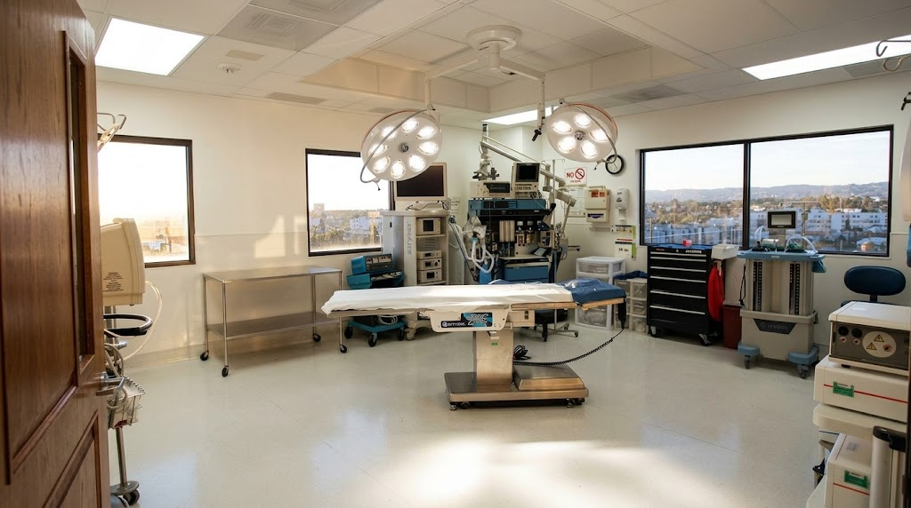
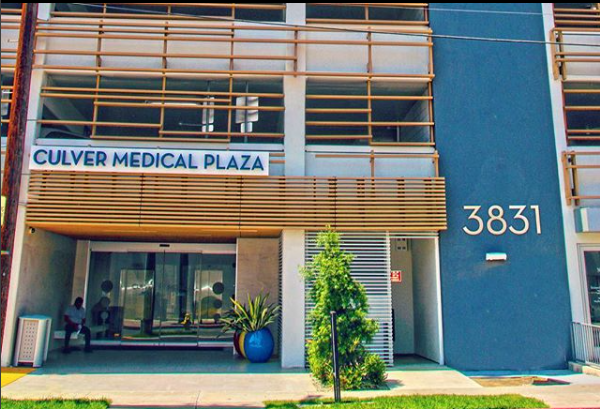

Expertise
Nine surgical specialties under one roof
Pain management, orthopedics, podiatry, ENT, general surgery, spine surgery, plastic surgery, GI, and gynecology.
ExploreA Joint Commission‑accredited, Medicare‑approved ambulatory surgery center where board‑certified surgeons across nine specialties deliver same‑day procedures with concierge attention.
Three reasons patients choose Culver City Surgical Specialists for their care.
Pain management, orthopedics, podiatry, ENT, general surgery, spine surgery, plastic surgery, GI, and gynecology.
ExploreDirect communication with the person performing your procedure, from first call through full recovery.
Explore
The highest level of accreditation for ambulatory surgery centers, backed by rigorous safety protocols and modern equipment.
Explore
A full range of outpatient surgical procedures performed by board‑certified specialists. Tap any procedure for details.
Image-guided injections, ablations, and minimally-invasive procedures for chronic spine, joint, and nerve pain.
Arthroscopic and open procedures for the shoulder, elbow, hand, wrist, and knee. Restore function with minimal downtime.
Reconstructive and corrective foot surgery for bunions, hammer toes, fractures, and chronic heel pain.
Sinus, septum, and nasal procedures that improve breathing, sleep, and facial balance.
Laparoscopic abdominal and metabolic procedures including hernia repair, gallbladder, and bariatric surgery.
Targeted, motion-preserving and stabilizing spinal procedures performed through small incisions for fast recovery.
Facial, breast, and body contouring procedures with a focus on natural, lasting results.
Screening, diagnostic, and therapeutic endoscopy for the upper and lower GI tract.
Minimally-invasive procedures for fibroids, endometriosis, incontinence, and pelvic floor restoration.

Direct access means you speak with the person holding the scalpel — not an intermediary.
Heal at home with a plan written specifically for your body and your schedule.
Minimal wait times and same-day procedures in a calm, focused setting.
Modern facility with attentive surgical staff who know you by name.
Our track record reflects our commitment to excellence and personalized care in every procedure we perform.
0+
Surgeries performed with exceptional outcomes
0%
Patients report high satisfaction with care and results
0 wks
Most patients return to normal activities quickly
0+
Maintaining rigorous standards and surgical excellence
Modern suites designed for your comfort and confidence.
Real outcomes from those who trusted us with their care.
"I was back to running within three weeks. The direct access to my surgeon made all the difference."
"The personalized attention here isn't what you find at a hospital. They knew my name, my concerns, my goals."

"Recovery at home with a plan I understood completely. That made the healing process feel manageable and real."
Everything you need to know about your procedure and recovery.
Work directly with your surgeon from the first conversation.
